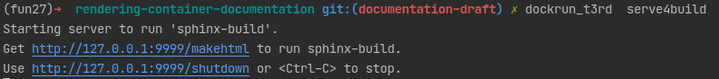
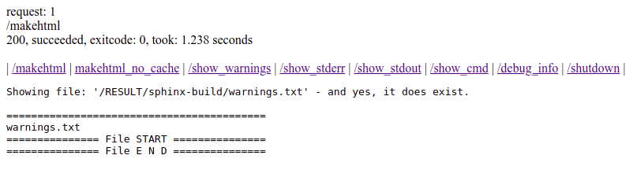
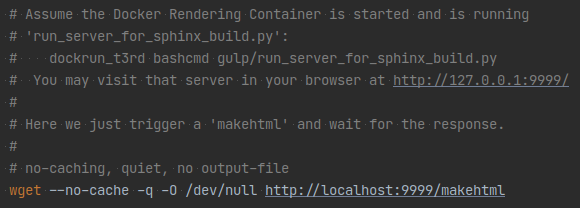
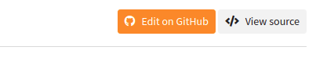

Releases v2.8 (2021-03-29)¶
Page contents:
v2.8.3¶
Release date v2.8.3: 2021-03-29
Published to docs server
NEW: just1sphinxbuild functionality (speed!)¶
New in version 2.8.3.
According to TYPO3 conventions the documentation of a project should start with
file ./Documentation/Index.rst. In this case and for a local rendering
("render while you type") it would be sufficient to just run a sphinx-build
command within the container and skip all the steps of the rendering tool chain.
When you start thinking in fractions of a second of rendering time this makes
a difference. You can now do that:
dockrun_t3rd just1sphinxbuild
This will trigger one docker run with all the necessary parameters for your
situation and then run a sphinx-build command within the container:
/ALL/venv/.venv/bin/sphinx-build -v -v -v -b html -c /ALL/Makedir -j auto \
-T -q -w /RESULT/sphinx-build/warnings.txt -d /RESULT/Cache \
/PROJECT/Documentation /RESULT/Result/project/0.0.0/
If you are wondering what all those parameters mean have a look at the help that
sphinx-build offers:
dockrun_t3rd bashcmd 'sphinx-build --help'
An alternate, equivalent call to the just1sphinxbuild functionality would be:
dockrun_t3rd bashcmd 'python2 /ALL/Scripts/just1sphinxbuild.py'
To inspect what script that is you can run:
dockrun_t3rd export-ALL
Of course, you can then take that script from
Documentation-GENERATED-temp/ALL-exported/Scripts and reuse it. You can
dig down deeper into the rabbit hole as you like.
Another way to use individual parameters would be this.
Run makehtml once to garantee that folders exist:
dockrun_t3rd makehtml
Then directly run docker and the sphinx-build command - again and again:
dockrun_t3rd \
bashcmd \
'\
sphinx-build -v -v -v \
-b html \
-c /ALL/Makedir \
-j auto -T \
-q \
-w /RESULT/warnings.txt \
-d /RESULT/Cache \
/PROJECT/Documentation \
/RESULT/Result/project/0.0.0/ \
'
UPDATED: serve4build functionality (speed!)¶
New in version 2.8.3.
serve4build takes the just1sphinxbuild functionality even a step further.
just1sphinxbuild does a complete container run for each. This means, a copy
of the Docker image is made, the copy is run and afterwards deleted again by
your OS.
In contrast, serve4build is starting the container only once and keeps it
running as a little service. The service is provided by a little webserver that
is mainly waiting for a rebuild request (makehtml) or for the shutdown
request. Some more actions are also available.
START SERVER
Start the DRC as build server:
dockrun_t3rd serve4buildLooks like:
To use a port of your choice, for example 8989, do:
dockrun_t3rd serve4build 8989
BROWSER
Go to http://127.0.0.1:9999/makehtml:
HTTP-REQUEST
Or, just issue a HTTP request by some tool like wget or curl:
wget --no-cache -q -O /dev/null http://127.0.0.1:9999/makehtml
For example, you could create a file
run_sphinx_build.shhaving this content:If you then set up a file watcher and run that file on changes there will be a very quick re-rendering.
SHUTDOWN
To shutdown the server, do a http://127.0.0.1:9999/shutdown request.
Or, if you find out later that port 9999 is still in use and the docker container is still running, look for running containers:
docker psTo stop a container immediately:
docker stop -t0 95d43292f285 # <- fill in correct name or id
v2.8.2¶
Release date v2.8.2: March 27, 2021
Not published to docs server
NEW: serve4build¶
See description in chapter v2.8.3.
v2.8.1¶
Release date v2.8.1: March 26, 2021
Not published to docs server
The DRC v2.8.1 uses v4.5.2 of the sphinx-typo3-theme.
BUGFIX: Sphinx search autocompletion¶
The configuration of the autocompletion of the built in Sphinx offline search
now is set to disableAutoSelect = true. This means, that the search will
proceed with exactly the string in the search field when you press enter.
Before, the most adjacent item from the proposal list was picked which could give surprising results.
BUGFIX: Logo link area¶
Changed in version 2.8.1: Bugfix logo
The link area of the logo does not stretch into the shaded area past the actual image any more.
UPDATE: How to edit button¶
Changed in version 2.8.1: Always on
The button is now shown constantly and not as an "on hover" effect. It is not shown though if there is no "Edit on GitHub" button at all.
The target of the 'How to edit' button is now a theme configuration value
h2edit_url and thus can be set in conf.py. We are using
Defaults.cfg, Settings.cfg, Overrides.cfg and
jobfile.json to compose conf.py. In official renderings for
the TYPO3 docs server the setting is made by Overrides.cfg.
v2.8.0¶
Release date v2.8.0: March 16, 2021
Published to docs server
NEW: How to edit button¶
New in version 2.8.0.
v2.8 of the DRC is using v4.5 of the sphinx-typo3-theme. The actual changes are made in the theme.
At the top right of our pages we usually show the "Edit on GitHub" and "Show source" buttons:
It is desirable to give users help about what they have to expect when they click the edit button. On the other hand we don't want to overload the layout. As a solution there now is a third button which only appears while hovering over the edit button:

The "How to edit" button will take users to the How to work with GitHub page of the "Writing documentation" manual.
At the moment the link is hardcoded within the sphinx-typo3-theme.
Changed in version v2.8.1: Made configurable as theme setting h2edit_url.
NEW: Sphinx can use parallel processes¶
We updated several Sphinx extensions. They now return the so called "extension
metadata" from their setup routine. They now signal True for parallel_read_safe
and parallel_write_safe. We could verify that Sphinx now uses parallel
processes for writing. The extension sphinxcontrib.t3targets wasn't compatibel
with this change and got fixed.
Testimonial: A user reported that rendering the TYPO3 Core manual about the ChangeLogs now only took 15 minutes instead of 45 minutes. All eight cores of the machine were used by eight separate processes.
REMOVED: Full content width for extra wide screens¶
Changed in version 2.8.0.
Feature NEW: Making use of extra wide screens was removed. Instead, a better solution will be introduced in one of the next versions.